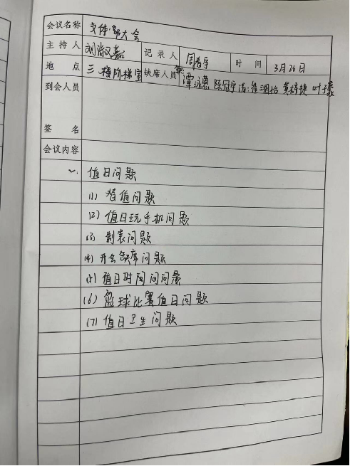

各学生组织开会时的会议记录与会议照片
- 1、每周部长会安排不同的实习干事进行学生会部门（学生会、社团联合会、志愿者协会等所以部门）进行会议记录，要求简洁，书写工整。
- 2、每周部长会安排不同的实习干事进行学生会部门（学生会、社团联合会、志愿者协会等所以部门）进行会议拍照，要求符合主题，构图正确。

此图片为会议记录
此图片为会议记录

此图片为会议拍照
晚修突击检查学生组织的值日情况
晚修突击检查学生组织值日情况，检查是否戴卡、是否玩手机（与工作内容无关），如有没戴卡或玩手机的情况登记名字并上报。
协助学校策划活动
- 1、活动目的：
为加强学生之间的交流，提高协作能力，增进同学之间的友谊，密切师生关系，培养学生良好的兴趣爱好，提升审美能力与品位，提高学生的综合素质，丰富校园生活 - 2、活动时间：XX年XX月XX日 上午/下午 XX:XX~XX:XX
- 3、活动地点：校内某地点
- 4、主办单位：校团委秘书处
- 5、资源需要：人力资源及物质资源根据活动规模合理分配
 Lou1s-Ai
Lou1s-Ai